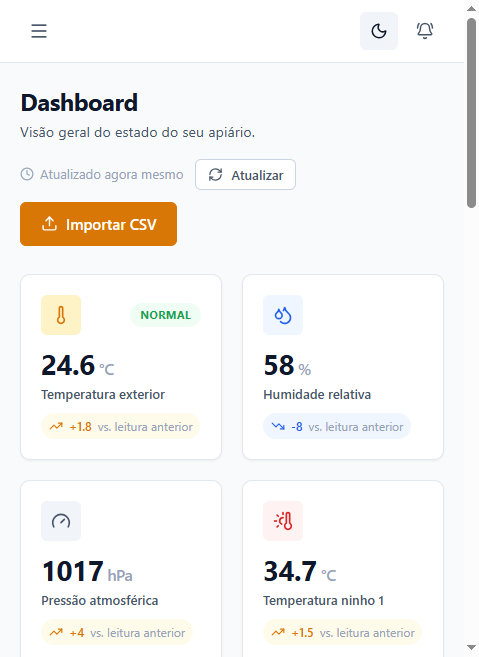
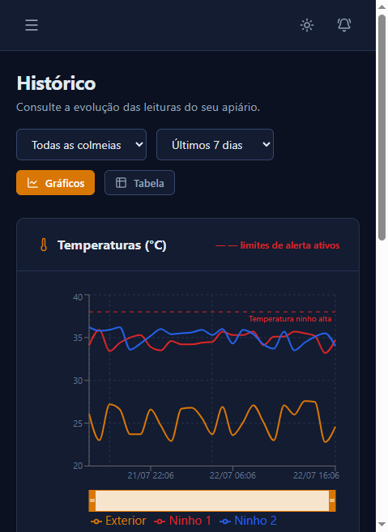

Protótipo funcional em bancada
Apiário Tech IoT
Monitorização de colmeias para saber o que se passa lá dentro sem as abrir. Nasceu das três colmeias que mantenho: sensores ligados a um ESP32 enviam leituras para uma API, e um painel web mostra o estado de cada colmeia, o histórico e os alertas.
- FeitoSensoresBME280, duas sondas DS18B20, balança com HX711, relógio RTC
- FeitoFirmware ESP32Código modular, registo em microSD e um teste por sensor
- FeitoAPI e base de dadosNode.js, Express e PostgreSQL, com autenticação de utilizadores e dispositivos
- FeitoPainel webEstado atual, histórico em gráfico, alertas, intervenções e importação de CSV
- A seguirTeste no apiárioFuncionamento no campo, com energia solar


- ESP32
- C++
- TypeScript
- React
- Node.js
- Express
- Prisma
- PostgreSQL